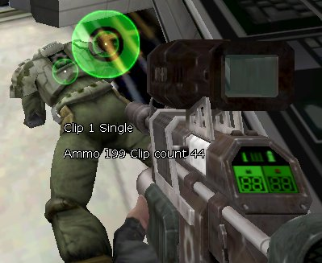

UDN
Search public documentation:
InteractionReference
Interested in the Unreal Engine?
Visit the Unreal Technology site.
Looking for jobs and company info?
Check out the Epic games site.
Questions about support via UDN?
Contact the UDN Staff
Interaction Reference
Last updated by Michiel Hendriks, small v3323 update. Previously updated by Chris Linder (DemiurgeStudios?). Original author was Chris Linder (chris@demiurgestudios.com) working off a prior document by Richard 'vajuras' Osborne (UdnStaff).Introduction
Interaction(s) are graphical user components that can accept key input and render two dimensional graphics to the screen (make sure you read CanvasReference on how to render to the Canvas). The interaction system primarily serves two purposes. First, it's designed to lay the foundation for supporting input and render pipelines for multiple viewports and second, to be as friendly as possible to existing systems. Currently, it's used extensively for ingame menus. The system is very flexible and powerful, containing functions to transform 3d vectors into 2d vectors (from the world to the screen) and vice versa. It also provides the functionality and flexibility to be applied on an individual basis to players to provide support for real-time targeting systems (see the example below). This document will focus mainly on basic uses of Interactions with respect to the player.Interactions.uc
class Interactions extends Object
abstract
native;
(Note: Given the unfortunate name of this class we will use italics to denote this class, Interactions, while the word Interactions without italics will be used to talk about multiple instances of the class Interaction.)
Interactions is the base class for both Interaction and InteractionMaster. It defines input keys in the enum EInputKey and input states in the enum EInputAction. Every key that the user can possibly press has an IK equivalent defined within EInputKey. The input states defined in EInputAction usually accompany a key input event. The states are as follows:
| IST_None | Not performing special input processing. |
| IST_Press | Handling a keypress or button press. |
| IST_Hold | Handling holding a key or button. |
| IST_Release | Handling a key or button release. |
| IST_Axis | Handling analog axis movement. |
InteractionMaster.uc
class InteractionMaster extends Interactions
transient
Native;
The InteractionMaster has only one single instance on the client machine. During intialization (refer to UnGame.cpp), the game engine creates a global instance of the InteractionMaster. The InteractionsMaster is responsible for delegating all key and render events to all other Interactions on the client. The interaction master maintains a list of global interactions in the GlobalInteraction array as well as references to the BaseMenu Interaction and the Console Interaction. The class of Console is specified in UT2004.ini ([Engine.Engine]) and it is created at startup and put in the GlobalInteraction array. BaseMenu will be associated with the GUIController instance defined in the UT2004.ini, this is done right before creation of the console (Note: pre-v3323 BaseMenu is not set). The BaseMenu is also put in the GlobalInteraction array. The InteractionMaster is also responsible for local interactions but it does not maintain a list of these people they are stored per player viewport.
User Functions
These are functions you would want to call yourself while working with interactions. The other functions allow interactions to work and manually calling them would interfere with the workings of interactions.AddInteraction
event Interaction AddInteraction(string InteractionName, optional Player AttachTo)
Adds an Interaction. The InteractionName is interpreted as a class name and using this name the interaction is dynamically loaded. The AttachTo parameter is used to attach the interaction to a given Player (which is almost always a Viewport). If AttachTo is NONE, the interaction is considered global and is added to the GlobalInteraction array. Otherwise, the interaction is added to the LocalInteractions array of the Player. In most cases this function is called from C++ but can certainly be called from script.
RemoveInteraction
event RemoveInteraction(interaction RemoveMe)
Removes an Interaction. This function will remove the interaction from wherever it is, either globally or locally. The interaction will still be valid though and could be re-added at a later time.
SetFocusTo
event SetFocusTo(Interaction Inter, optional Player ViewportOwner)
This function will cause the given Interaction to adjust its position in its array so that it processes input first and displays last. ViewportOwner must be given if the interaction is a local interaction or else the function will not be able to adjust its position.
Travel
native function Travel(string URL)
Setup a travel to a new map, the client will travel to the given URL in the next tick. This has the same effect as calling ClientTravel(URL, TRAVEL_Absolute, false) on the player.
Interaction.uc
Unlike the InteractionMaster, there can be many interactions. These classes provide the actual implementation functions that are called by the InteractionMaster during events. Interaction objects can be attached to a specific viewport (PlayerController.Player for example) in which case they are local interaction or to the InteractionMaster itself in which case they are global interaction. Input travels from the client to the engine where it is routed to the InteractionMaster. First, all registered global interactions are notified of the key event via their KeyEvent(...) or KeyType(...) function if bActive is true. If none of the global interactions returns a true indicating that the key input was handled, then the InteractionMaster proceeds to pass the event to local interactions. At any point, in any interaction, the key event can be interrupted by an interaction returning true indicating that it processed the event. Messages follow a similar process with the difference being is that they cannot be interrupted by other interactions and the message is therefore sent to all interactions even if bActive is false. By default, interactions do not get tick notifications but if you set bRequiresTick they will.Global Interactions
Global interactions have two major advantages. First, they get to process input first and draw last and second, they can implement certain functions natively without calling anything in script. (See Functions to Override). A menu would be a good thing to do with a global interacation.Local Interactions
Local interactions only effects the owning viewport (PlayerController.Player for example). As mentioned before the global interactions get to process input first and draw last. The main benefit of local interactions is that they have access to the PlayerController (ViewportOwner.Actor). A targeting system would be a good thing to do with a local interaction.Functions to Call
Initialize
native function Initialize()
Setup the state system and stack frame.
ConsoleCommand
native function bool ConsoleCommand( coerce string S )
Executes a console command.
WorldToScreen
native function vector WorldToScreen(vector Location, optional vector CameraLocation, optional rotator CameraRotation)
WorldToScreen returns the X/Y screen coordinates of a given Location in world coordinates for this viewport. If CameraLocation and CameraRotation are not given, this function will use the camera for this viewport.
ScreenToWorld
native function vector ScreenToWorld(vector Location, optional vector CameraLocation, optional rotator CameraRotation)
ScreenToWorld converts an X/Y screen coordinate to a world vector that points in the direction given by the 2D screen coordinate. If you drew a line in this direction starting at the camera location, it would go through the given screen point. If CameraLocation and CameraRotation are not given, this function will use the camera for this viewport.
SetFocus
function SetFocus()
This function will adjust the position of this interaction in its array so that it processes input first and displays last. Remember that global interactions have precedence so if this is a local interaction it still might not be first and last.
Functions to Override
Overriding these functions is the point of interactions; it allowing you to control and filter the input and draw to the screen. All these functions can be overridden in script but if you are writing a global interaction you can choose to implement these functions natively in C++ instead. The only caveat is it you must implement all functions natively if you want to implement any natively. To do this make sure your class is declared with the keyword Native and hasbNativeEvents = True in defaultproperties. Then include this block of code after the class declaration:
cpptext
{
void NativeMessage(const FString Msg, FLOAT MsgLife);
UBOOL NativeKeyType(BYTE& iKey, TCHAR Unicode );
UBOOL NativeKeyEvent(BYTE& iKey, BYTE& State, FLOAT Delta );
void NativeTick(FLOAT DeltaTime);
void NativePreRender(UCanvas* Canvas);
void NativePostRender(UCanvas* Canvas);
}
In the corresponding C++ file for your class, you can just implement these functions and they will be called by the interaction master. See GUIController.uc and UnGUI.cpp for an example.
Initialized
event Initialized()
Initialized is called directly after this interaction has been created and initialized, called by Initialize(). (Note: This function does not have a native version.)
Message
function Message( coerce string Msg, float MsgLife)
This event allows interactions to receive messages. This function is called from event ReceiveLocalizedMessage(...) in PlayerController.uc for example.
KeyType
function bool KeyType( out EInputKey Key, optional string Unicode )
KeyType is called when the user types a key. The Unicode string is the Unicode version of Key in string form. This function should return true if it processes the given input and false if it does not. Returning true will interrupt the chain of interactions and all subsequent interactions will not get this event.
KeyEvent
function bool KeyEvent( out EInputKey Key, out EInputAction Action, FLOAT Delta )
KeyEvent is called for every user action. Key is the and Action represent the input, state pair while Delta is an optional parameter that is only used for non-key events like mouse wheel or mouse movement. Otherwise Delta is 0. This function should return true if it processes the given input and false if it does not. Returning true will interrupt the chain of interactions and all subsequent interactions will not get this event.
PreRender
function PreRender( canvas Canvas )
This is the pre-render function and therefore should be used for sizing and positioning not drawing. This function is not used often.
PostRender
function PostRender( canvas Canvas )
This is the post-render function. Drawing to the Canvas should be done here.
Tick
function Tick(float DeltaTime)
By default, Interactions do not get ticked, but you can simply turn on bRequiresTick and this function will be called. DeltaTime is the time since the last tick.
Example
This is a simple but useful example of a local interaction that draws a cursor if a target is in front of the player.
class TestInteraction extends Interaction;
function Initialized()
{
log(self@"I'm alive");
}
function PostRender( canvas Canvas )
{
simpleTracer(Canvas);
}
function simpleTracer( canvas Canvas )
{
local actor Other;
local vector HitLocation, HitNormal, StartTrace, EndTrace;
local vector ScreenLocation;
local PlayerController PlayerOwner;
PlayerOwner = ViewportOwner.Actor;
//Perform a trace to find any colliding actors
StartTrace = PlayerOwner.Pawn.Location;
StartTrace.Z += PlayerOwner.Pawn.BaseEyeHeight;
EndTrace = StartTrace + vector(PlayerOwner.Pawn.Rotation) * 1000.0;
Other = PlayerOwner.Pawn.Trace(HitLocation, HitNormal,
EndTrace, StartTrace, true);
if (Other != None)
{
PlayerOwner.ClientMessage("Hit:"@Other);
//Convert 3d location to 2d for display on the Canvas
ScreenLocation = WorldToScreen(Other.location);
Canvas.SetPos(ScreenLocation.X, ScreenLocation.Y);
Canvas.Style = 3;
Canvas.SetDrawColor(255,255,255);
Canvas.DrawTile(texture 'LockCHair', 84,84,0,0,84,84);
}
}
defaultproperties
{
bVisible=true
bActive=true
}

Notice the BIG Green crosshair that is positioned over the character's back
event PostLogin( PlayerController NewPlayer )
{
Super.PostLogin(NewPlayer);
NewPlayer.Player.InteractionMaster.AddInteraction("TestUW.TestInteraction", NewPlayer.Player);
}
Interactions can also receive key input (as discussed earlier). However, the bActive property will have to be set to true in order for an interaction to receive the event from the InteractionsMaster. The following is a very basic example of how to receive a key event.
class TestKeyInputInteraction extends Interaction;
function Initialized()
{
log(self@"has been initialized");
}
function PostRender( canvas Canvas )
{
}
function bool KeyEvent( out EInputKey Key, out EInputAction Action, FLOAT Delta )
{
local PlayerController PlayerOwner;
if( Action!=IST_Press )
return false;
else if( Key==IK_Home )
{
PlayerOwner = ViewportOwner.Actor;
PlayerOwner.ClientMessage("Home key has been pressed.");
return true;
}
return false;
}
defaultproperties
{
bVisible=true
bActive=true
}
Note that in the KeyEvent(), both the Action and the Key is examined. The EInputAction event told us the user pressed a key. The EInputKey key informed us which key was pressed. For this example, I choose the HOME key, which is represented in the base Interactions class by IK_Home . When the user presses the Home key, the InteractionsMaster will receive true from the interaction indicating that the key event was handled by it. The InteractionsMaster will stop iterating through the iterations.